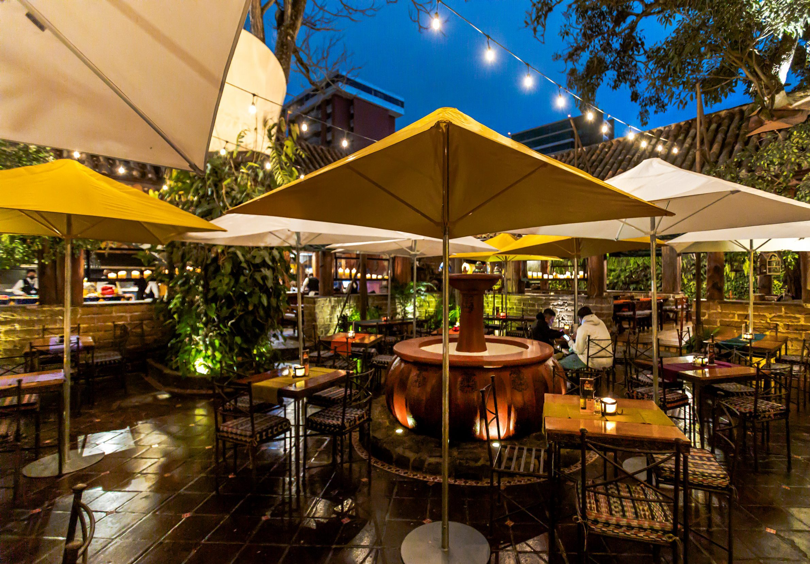
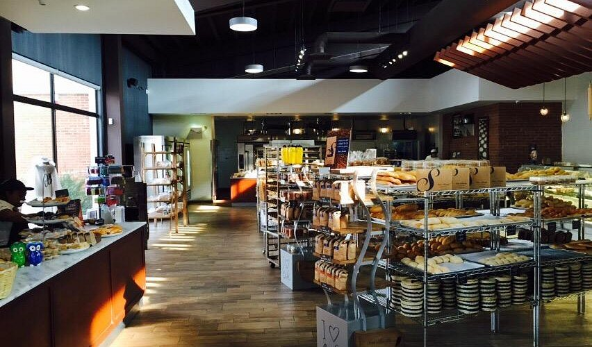
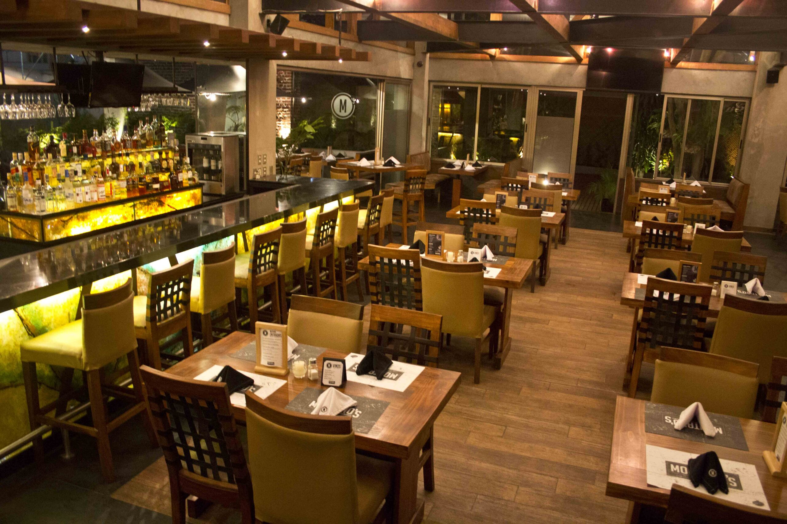
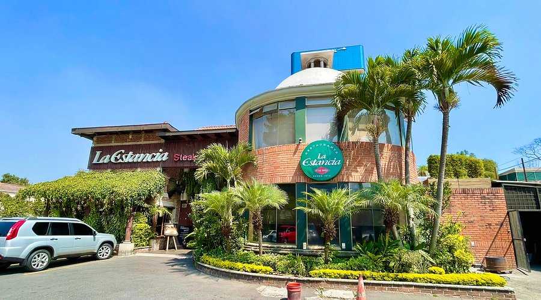

Hacienda Real
Restaurante elegante reconocido por sus carnes y ambiente familiar.
★★★★★
Zona 10, Ciudad de Guatemala
Ver ubicación

San Martín
Restaurante y panadería famosa por su ambiente y comida.
★★★★☆
Varias ubicaciones
Ver ubicación

Tre Fratelli
Restaurante italiano muy reconocido por sus pizzas artesanales, pastas y ambiente elegante.
★★★★☆
Zona 14, Ciudad de Guatemala
Ver ubicación

Montanos Steak House
Restaurante especializado en cortes de carne, reconocido por su excelente servicio y ambiente familiar.
★★★★✩
Zona 10, Ciudad de Guatemala
Ver ubicación

La Estancia
Restaurante reconocido por sus carnes, cocina internacional y ambiente elegante.
★★★★✩
Zona 10, Ciudad de Guatemala
Ver ubicación